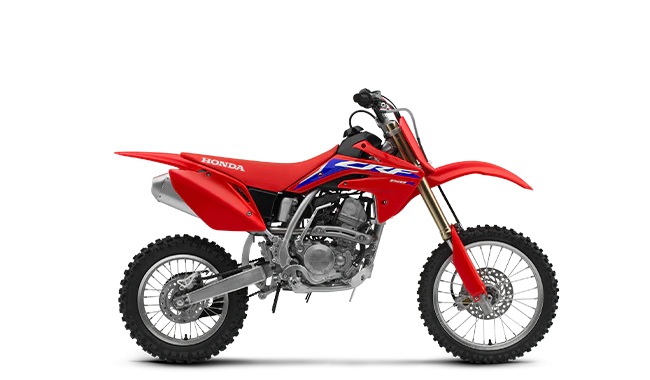

Competition teaches lessons at every age. Determination. Discipline. Self-confidence. Responsibility. To learn about winning, you need a motorcycle you can win on and that’s where the Honda CRF150 comes in. Competition ready, it’s tailor-made for younger champions. With a single-cylinder Unicam engine that packs a punch, they’ll have every advantage, right out of the gate. The CRF150 uses a Unicam engine based on our championship-winning CRF450. Designed to give you excellent rideability and more power and torque across the rev range, the engine runs consistently at different tracks-it's an all-around winner.
